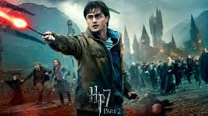
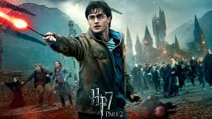
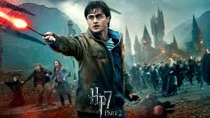
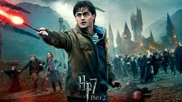

Harry Potter lives with his abusive uncle and aunt, Vernon and Petunia Dursley, and their bullying, spoiled son, Dudley. On Harry's eleventh birthday, he learns that he is a wizard when a man named Rubeus Hagrid invites him to attend Hogwarts, a school of magic. Hagrid explains that when Harry was an infant, a Dark wizard named Voldemort murdered his parents and tried to kill him as well. However, Voldemort's killing curse rebounded and seemingly destroyed him, leaving a lightning bolt-shaped scar on Harry's forehead. Hagrid takes Harry to Diagon Alley, where the latter discovers his fame among wizards while buying a wand, an owl named Hedwig, and other school supplies. A month later, Harry takes the Hogwarts Express to Hogwarts. He befriends Ron Weasley, a first-year student, during the journey. He also meets Hermione Granger and has a confrontation with Draco Malfoy. At Hogwarts, a magical Sorting Hat assigns each first-year student to a House. Harry, Ron, and Hermione are assigned to Gryffindor, although the Hat considers putting Harry in Slytherin.
While Harry Potter spends the summer with the Dursleys, Dobby, a house-elf, warns Harry of an "impending danger" at
Hogwarts. He attempts to prevent him returning to Hogwarts by sabotaging an important dinner with Vernon Dursley's
client. Vernon tries to prevent his departure in retaliation, but his friend Ron Weasley and his brothers Fred and
George rescue him in their father's flying car. Harry meets up with Hermione Granger in Diagon Alley, where they meet
Hogwarts' new Defence Against the Dark Arts teacher, Gilderoy Lockhart, along with Draco Malfoy and his father, Lucius,
who Harry sees slip a book into Ginny Weasley's cauldron.
After being blocked from entering Platform Nine and Three-Quarters at King's Cross railway station, Harry and Ron fly
the car to Hogwarts, where they crash into the Whomping Willow. Ron's wand is broken, and they each receive detention,
during which Harry hears a strange voice and subsequently finds caretaker Argus Filch's cat, Mrs Norris, petrified with
a message written in blood: "The Chamber of Secrets has been opened, enemies of the heir... beware." One of Hogwarts'
founders, Salazar Slytherin, supposedly constructed a secret Chamber containing a monster that only his heir can
control, capable of purging the school of Muggle-borns. Suspecting Malfoy to be the heir, Harry, Ron, and Hermione plan
to question him.
During another unhappy summer with the Dursleys, Harry Potter becomes enraged when Vernon's sister Marge viciously
insults his parents and accidentally causes her to inflate and float away. Expecting to be expelled from Hogwarts for
using magic outside school, Harry runs away but is picked up by the Knight Bus and taken to The Leaky Cauldron, where
Minister for Magic Cornelius Fudge assures Harry that he will not face punishment. Upon reuniting with his best friends
Ron Weasley and Hermione Granger, Harry learns that Sirius Black, an alleged supporter of Lord Voldemort, has escaped
Azkaban prison and is expected to come after Harry.
While journeying to Hogwarts, the Hogwarts Express is boarded by Dementors, ghostly prison guards searching for Black;
one of them causes Harry to faint, but the new Defense Against the Dark Arts teacher, Remus Lupin, repels it using a
Patronus Charm. At Hogwarts, Headmaster Albus Dumbledore announces that Dementors will patrol the school until Black is
captured. Hagrid is appointed as the Care of Magical Creatures teacher, but his first class goes awry when Draco Malfoy
provokes a hippogriff named Buckbeak to attack him; as a result, Draco's father has Buckbeak sentenced to death.
Harry Potter has a nightmare in which a Muggle caretaker named Frank Bryce is murdered at the Riddle House after overhearing a plot
by Lord Voldemort, Peter Pettigrew and another man whom Harry does not recognise. The following morning, Harry attends
the Quidditch World Cup with the Weasleys, Hermione Granger, Cedric Diggory and his father Amos. That night, Death
Eaters attack the campsite after the tournament and the unknown man from Harry's nightmare casts the Dark Mark.
At Hogwarts, Professor Dumbledore announces that the school will host the Triwizard Tournament along with the Durmstrang
Institute and the Beauxbatons Academy. One student from each school will be chosen by the Goblet of Fire to participate;
students under the age of seventeen are ineligible. The Goblet selects Fleur Delacour for Beauxbatons, Viktor Krum for
Durmstrang, and Cedric for Hogwarts. It then chooses Harry as a fourth Champion, leading to much confusion. Many
students believe Harry cheated, and Ron distances himself from him, hurt that Harry did not tell him when he allegedly
entered. Harry is forced to compete due to a magical binding contract when a Champion's name was selected.
For the first task, the Champions must retrieve an egg by getting past a dragon. Professor Alastor Moody, the new
Defence Against the Dark Arts teacher, hints that Harry can use his wand to summon his broomstick. All four Champions
collect their eggs. Ron reconciles with Harry after witnessing how perilous the first task was. On Christmas Eve, the
school hosts the Yule Ball, but Harry and Ron could not attend with their preferred dates and instead go with Parvati
and Padma Patil, respectively; Hermione goes with Viktor, provoking Ron's jealousy. Cedric advises Harry to use the
Prefects' bathroom on the fifth floor of Hogwarts, take a bath, and submerge the egg in the water to find the second
clue.
While staying at the Dursleys', Harry Potter and Dudley Dursley are attacked by Dementors. Harry repels them using a Patronus spell. The Ministry of Magic detects Harry using magic and expels him from Hogwarts, though he is later exonerated. The Order of the Phoenix, a secret organisation founded by Albus Dumbledore, informs Harry that the Ministry of Magic is attempting to stonewall rumors about Lord Voldemort's return. At the Order's headquarters, Harry's godfather, Sirius Black, mentions that Voldemort seeks an object he previously lacked; Harry believes it to be a weapon. Minister for Magic Cornelius Fudge has appointed Dolores Umbridge as Hogwarts new Defence Against the Dark Arts professor. Umbridge's refusal to teach defensive spells causes her and Harry to clash. Harry is forced to write lines for "lying" about Voldemort; a magic quill etches the words into his hand as he writes. Ron and Hermione are outraged, but Harry refuses to tell Dumbledore, who has distanced himself from Harry. As Umbridge gains more control over the school, Ron and Hermione help Harry form "Dumbledore's Army", a secret group to teach students defensive spells. Umbridge recruits Slytherins for an Inquisitorial Squad to spy on the other students. Meanwhile, Harry and Cho Chang develop romantic feelings for each other. One night, Harry envisions Arthur Weasley being attacked at the Ministry, seeing it from the attacker's perspective. Concerned that Voldemort will exploit this connection to Harry, Dumbledore has Severus Snape teach Harry Occlumency to defend his mind from Voldemort's influence. During a lesson, Harry sees Snape's memories of how his father, James, bullied and tormented Snape in school. The connection between Harry and Voldemort further isolates Harry from his friends. Meanwhile, Bellatrix Lestrange, Sirius's deranged Death Eater cousin, escapes Azkaban prison along with nine other Death Eaters. At Hogwarts, Umbridge and her Inquisitorial Squad expose Dumbledore's Army. Dumbledore, falsely accused of forming it, escapes as Fudge orders his arrest. Harry believes Cho betrayed Dumbledore's Army to Umbridge, ending their budding relationship. Umbridge becomes the new Headmistress.
Lord Voldemort tightens his grip on the wizarding and Muggle worlds: his Death Eaters kidnap wandmaker Ollivander and destroy the Millennium Bridge. With Lucius Malfoy incarcerated in Azkaban, Voldemort chooses his son, Draco Malfoy, to carry out a secret mission at Hogwarts. Draco's mother, Narcissa, and aunt Bellatrix Lestrange seek out Severus Snape, who claims he is a spy in the Order of the Phoenix. Snape makes an Unbreakable Vow with Narcissa to protect Draco and fulfill his task should he fail. Harry Potter accompanies Albus Dumbledore to persuade former Potions professor Horace Slughorn to return to Hogwarts. At the Burrow, Harry reunites with his best friends Ron and Hermione. In Diagon Alley, they see Draco and Narcissa Malfoy, and follow them into Knockturn Alley. The pair meet with Death Eaters, including the werewolf Fenrir Greyback. When Harry believes Draco is now a Death Eater, Ron and Hermione are sceptical. At Hogwarts, Harry discovers that his used Potions textbook is filled with notes and spells added by the Half-Blood Prince. Using it, Harry excels in class, impressing Slughorn, who awards him a luck potion. Ron makes the Gryffindor Quidditch team as Keeper and begins dating Lavender Brown, upsetting Hermione, who harbours feelings for him. Harry consoles Hermione while acknowledging his own feelings for Ginny Weasley. Harry spends Christmas with the Weasleys. His suspicions about Draco are dismissed by the Order, but Arthur Weasley reveals that the Malfoys may be interested in a Vanishing Cabinet. Bellatrix and Greyback attack and destroy the Burrow.
At Malfoy Manor, Severus Snape meets with Lord Voldemort and his Death Eaters. He reports that the Order of the Phoenix will move Harry Potter, no longer under his mother's protective spell, to a safe location. Voldemort confiscates Lucius Malfoy's wand; his own is powerless against Harry because it and Harry's wand are "twins" by sharing the same phoenix feather core. During the move, Harry and the Order are attacked by Voldemort and the Death Eaters, killing Hedwig and Mad-Eye Moody in the process. During preparations for Bill Weasley and Fleur Delacour's wedding, the new Minister for Magic Rufus Scrimgeour arrives. He informs Harry, Ron, and Hermione that Albus Dumbledore left each a bequest: Ron a Deluminator, Hermione a copy of The Tales of Beedle the Bard, and Harry the Golden Snitch he caught in his first Quidditch match. Dumbledore also bequeathed the Sword of Gryffindor to Harry, but it has gone missing. News arrives during the wedding that the Ministry has fallen and Scrimgeour is dead. Death Eaters attack, and Harry, Ron, and Hermione escape to Number 12, Grimmauld Place. While there, Ron realises that Sirius' brother, Regulus Black, is the R.A.B. who stole Salazar Slytherin's locket from Voldemort. Local thief Mundungus Fletcher later sold it to Dolores Umbridge. Harry, Ron, and Hermione infiltrate the Ministry and recover the locket, but Death Eaters chase them in a chaotic exit. Hermione disapparates them to a forest. Ron is injured. The trio starts their journey to discover and destroy all of Voldemort's Horcruxes, beginning with the locket.